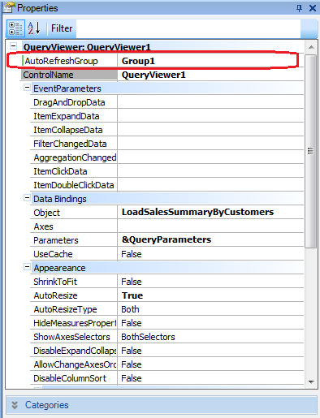
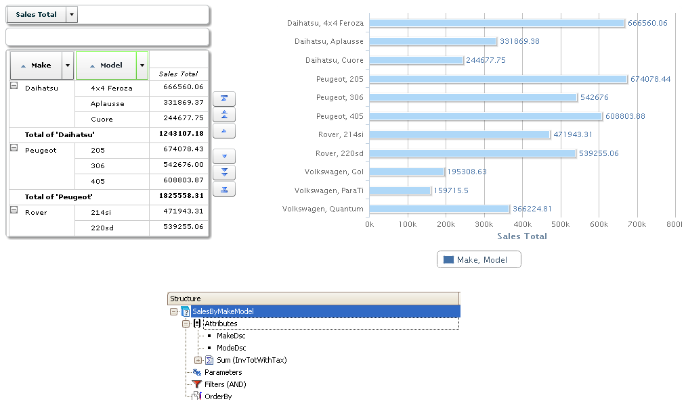
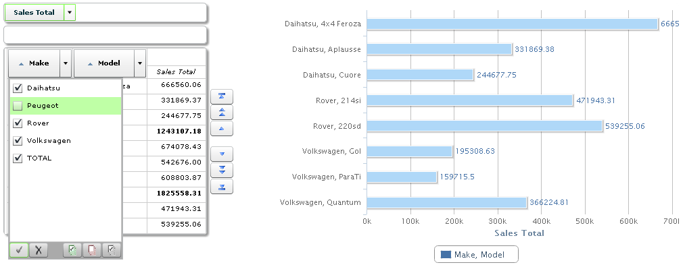
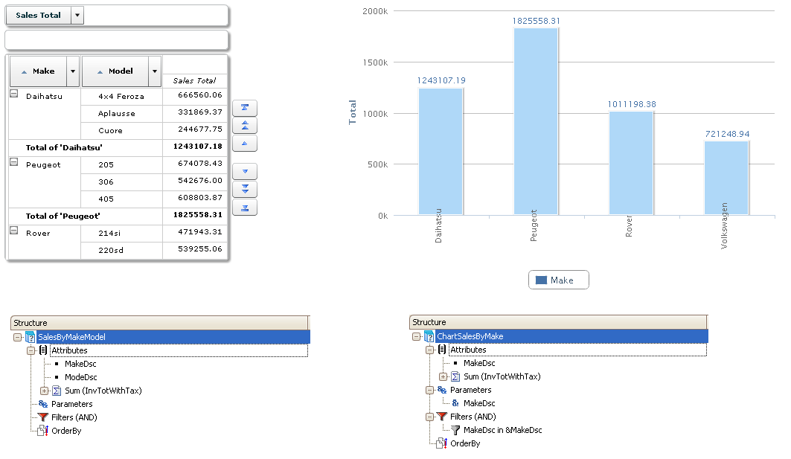

It allows relating various controls QueryViewer control that show related information (or the same information, but with a different output) so that they are automatically updated when one of them changes. Those controls to be related must be grouped under the same group name in the AutoRefreshGroup property (for example, "Group1"):  Those controls whose changes can affect other controls must be of PivotTable type. If there is more than one Pivot or Table in the Web Form, any control in the same group can have an impact on the rest. That is to say, upon changing the data being displayed in one of them, whether because the filters are changed or because a row is changed to a column, these actions will automatically cause the rest of the controls in the same group to be reloaded. The order in which they are refreshed is the order in which they are displayed on screen. ExamplesIn this example, both the control on the left and the control on the right have the same Query object assigned: SalesByMakeModel, which can be seen below. No parameters are sent between them. Both controls have the AutoRefreshGroup property configured with the same value, for example, “Group1”.  To change the chart on the right, something must be changed in the chart on the left. In the image below, Peugeot is disabled from the Make list, and as a result it disappears from the chart on the right.  In the following example, the PivotTable control is loaded by the SalesByMakeModel object, and the other one is loaded by the ChartSalesByMake object. Note that the latter receives as parameter the MakeDsc member stated in the structure of the other control’s query object, SalesByMakeModel. For the AutoRefreshGroup property to work, one of the attributes must be sent to the query object of the receiving control, that is, ChartSalesByMake.  Just like in the previous image, changing the makes displayed in the Pivot Table will automatically change the data displayed in the other chart. Note: For Card type queries (where Row and Column attributes are ignored) a collection type parameter must be assigned in the Parameters query section. Also, filters must be applied using the collection parameter previously mentioned.
|
| Backlinks |
| QueryViewer control properties |